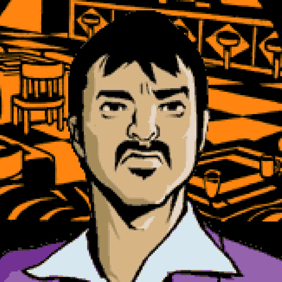
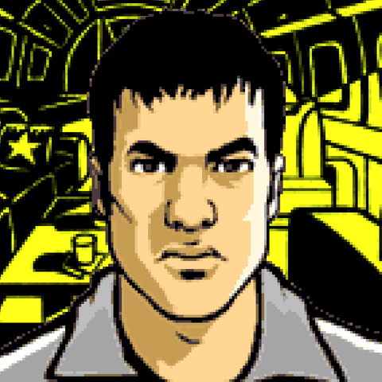
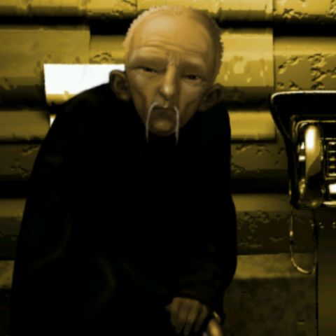
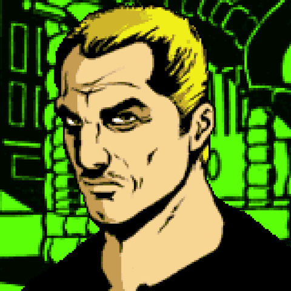

GTA Advance · 7 records · coverage: limited
Characters — Grand Theft Auto Advance
Named characters with role, affiliations and a short summary.
Download characters.json Whole game bundle 2 unverified records
| Image | Name | Role | Affiliations | Status |
|---|---|---|---|---|
 | 8-Ball | Explosives expert | Liberty City underworld | Alive |
 | Asuka Kasen | Yakuza co-leader | Yakuza | Alive |
 | Cisco | Associate | Liberty City underworld | Alive |
 | King Courtney | Yardies leader | Yardies | Alive |
 | Mike | Protagonist | Independent, Vinnie's crew | Alive |
 | Uncle Fu | Antagonist | Liberty City Triads | Deceased |
 | Vinnie | Partner, antagonist | Liberty City underworld | Deceased |
Field definitions
| Field | Type | Required | Notes |
|---|---|---|---|
name | string | yes | |
role | string | yes | |
affiliations | array | yes | array of strings |
status | string | no | |
summary | string | yes | |
first_appearance | string | no | |
image | string | null | no | |
verified | boolean | yes | |
source | string | no |